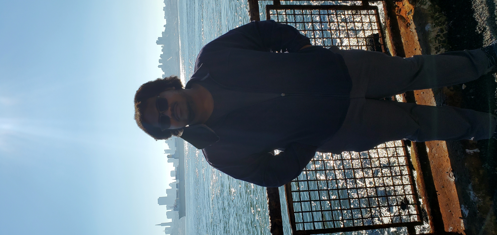

About Me

Here is some information about me.
- I was born in New York City
- I would eat Chinese food everyday if I could
- I have a love for trains
I have recently started travelling two years ago. Below is a list of where I have travelled.
- Washington, DC
- San Francisco, California (Image above)
- Chicago, Illinois (April 2023)
Last updated on March 30, 2023